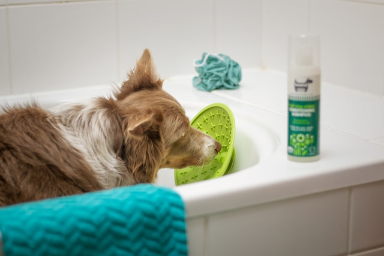

FoyoPets is your go-to for celebrating the bond with your furry friends. Discover curated products, expert advice, and heartwarming stories to make every moment special.
Discover essential pet supplies, from nutritious food and engaging toys to grooming kits and cozy beds. Our curated collection is designed to cater to the unique needs of your pets, ensuring their happiness and well-being. Whether you're looking for high-quality accessories, innovative feeding solutions, or comfortable resting options, we have everything you need to make your pet's life more enjoyable. Explore our range of products and celebrate the special bond you share with your furry companions.
Scroll For More Products

FEATURED PETS
Explore our featured pets, each with a unique story and personality. From playful puppies to wise old cats, these animals are looking for their forever homes. Discover the joy of pet adoption and find your perfect companion today! Each pet has been lovingly cared for and is ready to bring happiness and companionship into your life. Whether you're looking for a loyal dog, a curious cat, or a small furry friend, our featured pets are sure to capture your heart. Take the first step towards a lifelong bond and make a difference in the life of a deserving animal.
Cats
Cats are independent, curious, and affectionate companions. They bring joy and comfort to their owners with their playful antics and soothing purrs. Adopting a cat can enrich your life and create a lasting bond.
PET STORIES
Our blog explores the multifaceted journey of pet ownership, offering insights into pet life, coping with pet loss, and promoting overall wellness. Dive into heartwarming stories, expert advice, and practical tips to enhance your bond with your furry companions. Whether you're navigating the joys of pet parenting, seeking solace after a loss, or looking for ways to ensure your pet's well-being, our blog is here to guide and support you every step of the way.
FoyoPets is your go-to for celebrating the bond with your furry friends. Discover curated products, expert advice, and heartwarming stories to make every moment special.